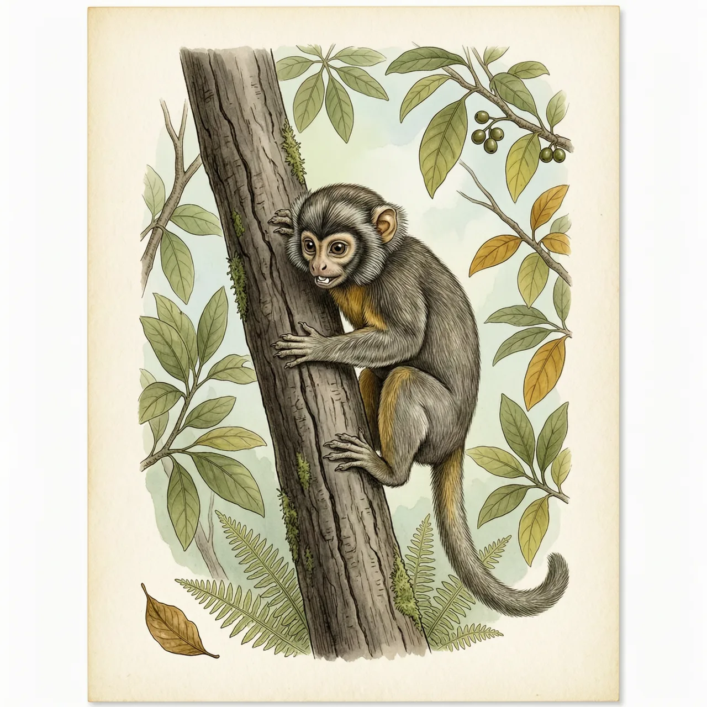
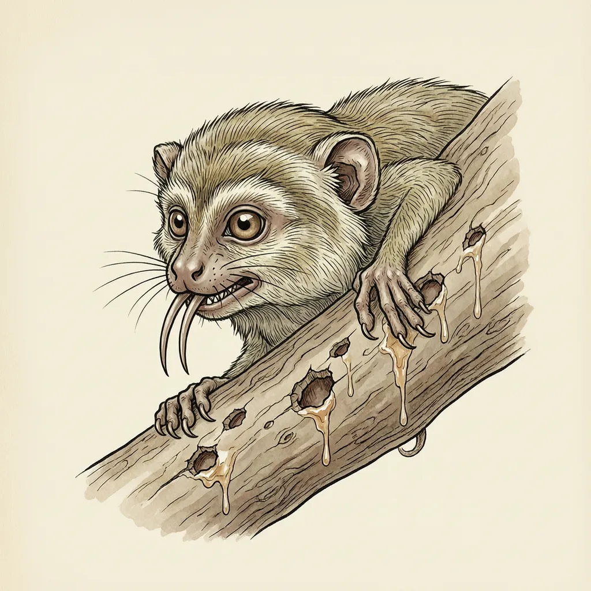

倭狨是最小的猴类：体长14到16公分，尾巴约15到20公分，雄性体重140克。它栖在雨林的树冠层，用钩状的爪贴住树干，靠门齿在树皮上钻孔，舔食渗出的树汁和昆虫。2003年发现了体型更小的灵长类，但最小的猴仍是它。
一根成人手指粗细的枝条末端，是倭狨日常活动的舞台。这种猴子体长只有14到16公分，尾巴却约15到20公分，比身子还长；雄性重140克，雌性120克。它见于巴西西部、哥伦比亚西南、厄瓜多尔西部和秘鲁东部的雨林，树栖、群居，一生大部分时间在上层枝叶间度过。雨林冠层的枝条细、承重有限，倭狨的身量让它能站到更大的猴站不住的枝梢上取食和观察。
别的猴类在枝叶间找果子，倭狨把时间花在树干上。它的趾端是钩状的爪，能让整个身子贴住竖直的树皮；接着用门齿在树皮上啃出小口，舔食渗出的树汁，顺带吃掉被汁液招来的昆虫。啃开的口子会继续渗汁，同一棵树能被它反复利用。对一只一百多克的猴子来说，这是一份挂在身上、不用挑季节的食物。
「最小」这个头衔，倭狨丢过一次，但没全丢。2003年，体型更小的灵长类被发现，它不再是灵长类里的头名，却仍是最小的猴类。另一刀来自分类学：它原本被当作一个种的两个亚种，西北侏狨（指名亚种）和 Cebuella pygmaea niveiventris；后来后者被提升为独立种，称东部倭狨，两者分化时间约254万年前。所以「世界上最小的猴子」如今指的是两个物种。
